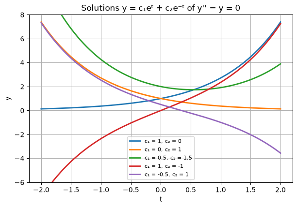
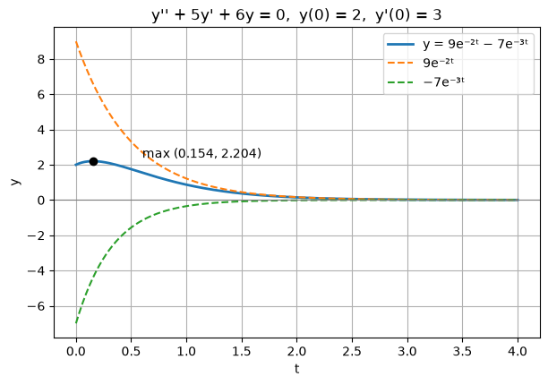
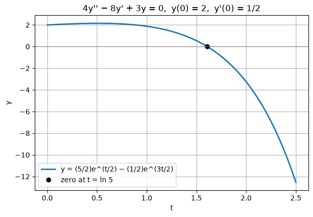
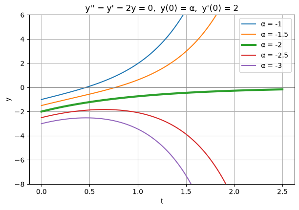
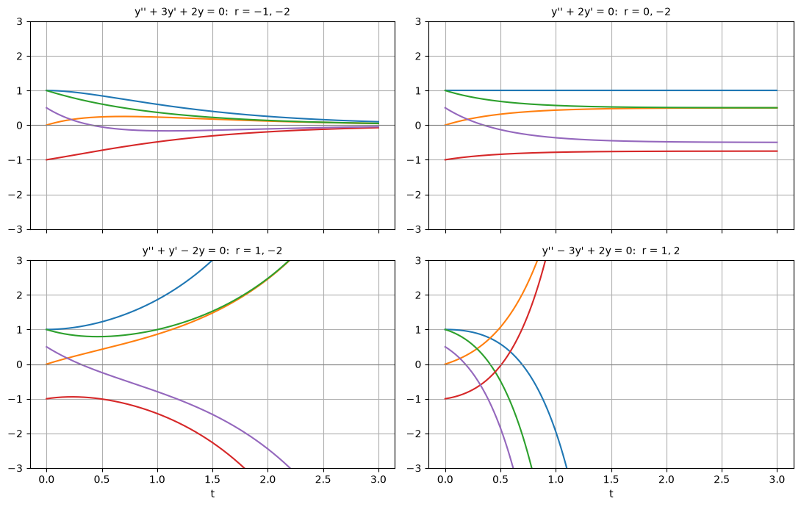

Code
import numpy as np
import matplotlib.pyplot as plt
plt.rcParams["figure.figsize"] = (7, 4.5)
plt.rcParams["axes.grid"] = True
np.set_printoptions(precision=6, suppress=True)Miraj Samarakkody
October 26, 2026
A second-order equation involves the second derivative of the unknown function. This section defines linear second-order equations and their initial value problems, then solves the simplest important case: homogeneous equations with constant coefficients,
\[ay'' + by' + cy = 0.\]
The method is to try \(y = e^{rt}\), which turns the differential equation into a quadratic equation for \(r\). This section treats the case where that quadratic has two distinct real roots. Complex roots and repeated roots are in Sections 3.3 and 3.4.
Reference: Boyce & DiPrima, Elementary Differential Equations and Boundary Value Problems, 11th ed., §3.1.
Use: constant coefficients, right-hand side zero, characteristic roots real and different (\(b^2 - 4ac > 0\)).
Example: \(y'' + 5y' + 6y = 0\), \(y(0) = 2\), \(y'(0) = 3\).
Check: \(y(0) = 9 - 7 = 2\) and \(y'(0) = -18 + 21 = 3\). ✓
Tips
A second-order ODE has the form
\[\frac{d^2 y}{dt^2} = f\!\left(t,\ y,\ \frac{dy}{dt}\right).\]
It is linear if \(f\) is linear in \(y\) and \(y'\), that is \(f = g(t) - p(t)\,y' - q(t)\,y\):
\[y'' + p(t)\,y' + q(t)\,y = g(t).\]
Equivalently, \(P(t)\,y'' + Q(t)\,y' + R(t)\,y = G(t)\); dividing by \(P(t)\) gives the first form wherever \(P(t) \ne 0\). An equation that is not of this form is nonlinear.
| Equation | Linear? | Why |
|---|---|---|
| \(y'' + 3y' + 2y = \sin t\) | yes | constant coefficients, \(g(t) = \sin t\) |
| \(t^2 y'' + t y' + (t^2 - 4)y = 0\) | yes | coefficients depend on \(t\) only (Bessel’s equation) |
| \(y'' + \sin y = 0\) | no | \(\sin y\) is not linear in \(y\) (pendulum) |
| \(y'' + y\,y' = 0\) | no | the product \(y\,y'\) |
Homogeneous or nonhomogeneous. The equation is homogeneous if \(g(t) = 0\) (or \(G(t) = 0\)) for all \(t\), and nonhomogeneous otherwise. (“Homogeneous” here has nothing to do with the homogeneous first-order equations \(y' = F(y/t)\).) Sections 3.1 to 3.4 deal with homogeneous equations; Section 3.5 shows that solving a nonhomogeneous equation reduces to the homogeneous one plus one particular solution.
Initial value problem. A first-order equation needed one condition. A second-order equation needs two, the position and the velocity at the starting time:
\[y'' + p(t)\,y' + q(t)\,y = g(t), \qquad y(t_0) = y_0, \qquad y'(t_0) = y_0'.\]
Geometrically, the solution must pass through \((t_0, y_0)\) with slope \(y_0'\). Section 3.2 proves that when \(p, q, g\) are continuous this IVP has exactly one solution.
From here on, the coefficients are constants:
\[ay'' + by' + cy = 0, \qquad a \ne 0.\]
Example 1. \(y'' - y = 0\).
We need a function whose second derivative equals itself. Calculus gives two at once: \(y_1 = e^{t}\) and \(y_2 = e^{-t}\). More generally, any combination
\[y = c_1 e^{t} + c_2 e^{-t}\]
is also a solution, since \(y'' = c_1 e^{t} + c_2 e^{-t} = y\). This is a two-parameter family, one constant for each of the two initial conditions.
Choosing the constants. For \(y(0) = 2\), \(y'(0) = -1\):
\[c_1 + c_2 = 2, \qquad c_1 - c_2 = -1 \quad\Longrightarrow\quad c_1 = \tfrac12,\ c_2 = \tfrac32,\]
so \(y = \tfrac12 e^{t} + \tfrac32 e^{-t}\).
The plot shows several members of the family. All of them grow eventually unless \(c_1 = 0\): the \(e^{-t}\) part dies out and the \(e^{t}\) part takes over.
t = np.linspace(-2, 2, 300)
for c1, c2 in [(1, 0), (0, 1), (0.5, 1.5), (1, -1), (-0.5, 1)]:
plt.plot(t, c1 * np.exp(t) + c2 * np.exp(-t), lw=2, label=f"c₁ = {c1}, c₂ = {c2}")
plt.ylim(-6, 8)
plt.xlabel("t"); plt.ylabel("y")
plt.title("Solutions y = c₁eᵗ + c₂e⁻ᵗ of y'' − y = 0")
plt.legend(fontsize=8);
Example 1 suggests looking for solutions of the form \(y = e^{rt}\), with \(r\) to be found. Then \(y' = re^{rt}\) and \(y'' = r^2 e^{rt}\), and substituting into \(ay'' + by' + cy = 0\) gives
\[(ar^2 + br + c)\,e^{rt} = 0.\]
Since \(e^{rt}\) is never zero, \(y = e^{rt}\) is a solution exactly when
\[\boxed{ar^2 + br + c = 0}\]
This is the characteristic equation of the differential equation. A differential equation has become an algebra problem.
Shortcut: read it straight off the ODE by replacing \(y'' \to r^2\), \(y' \to r\), \(y \to 1\).
The roots \(r = \dfrac{-b \pm \sqrt{b^2 - 4ac}}{2a}\) fall into three cases:
| Discriminant | Roots | Solutions | Section |
|---|---|---|---|
| \(b^2 - 4ac > 0\) | real and distinct, \(r_1 \ne r_2\) | \(e^{r_1 t}\), \(e^{r_2 t}\) | 3.1 |
| \(b^2 - 4ac < 0\) | complex conjugates \(\lambda \pm i\mu\) | \(e^{\lambda t}\cos \mu t\), \(e^{\lambda t}\sin \mu t\) | 3.3 |
| \(b^2 - 4ac = 0\) | repeated, \(r_1 = r_2\) | \(e^{r_1 t}\), \(te^{r_1 t}\) | 3.4 |
If \(r_1 \ne r_2\) are real, then \(y_1 = e^{r_1 t}\) and \(y_2 = e^{r_2 t}\) are solutions, and so is every combination
\[\boxed{y = c_1 e^{r_1 t} + c_2 e^{r_2 t}}\]
Why combinations are solutions. Write \(L[y] = ay'' + by' + cy\). Differentiation is linear, so
\[L[c_1 y_1 + c_2 y_2] = c_1 L[y_1] + c_2 L[y_2] = c_1 \cdot 0 + c_2 \cdot 0 = 0.\]
This is the superposition principle; it works for every linear homogeneous equation, not only constant-coefficient ones (Section 3.2).
Any initial conditions can be met. Impose \(y(t_0) = y_0\), \(y'(t_0) = y_0'\):
\[ \begin{aligned} c_1 e^{r_1 t_0} + c_2 e^{r_2 t_0} &= y_0,\\ c_1 r_1 e^{r_1 t_0} + c_2 r_2 e^{r_2 t_0} &= y_0'. \end{aligned} \]
The determinant of this linear system is \((r_2 - r_1)\,e^{(r_1 + r_2)t_0}\), which is nonzero because \(r_1 \ne r_2\). So there is always exactly one solution, and Cramer’s rule gives
\[c_1 = \frac{y_0' - y_0 r_2}{r_1 - r_2}\,e^{-r_1 t_0}, \qquad c_2 = \frac{y_0 r_1 - y_0'}{r_1 - r_2}\,e^{-r_2 t_0}.\]
Because every IVP can be solved by a member of the family, the family contains every solution: it is the general solution. (Section 3.2 makes this argument precise with the Wronskian; the determinant above is exactly the Wronskian of \(e^{r_1 t}\) and \(e^{r_2 t}\) at \(t_0\).)
The code below turns these formulas into a small solver.
def char_roots(a, b, c):
# Real, distinct roots of a r^2 + b r + c = 0, larger root first.
disc = b**2 - 4 * a * c
if disc <= 0:
raise ValueError(f"b² − 4ac = {disc}: roots are not real and distinct (see Sections 3.3, 3.4)")
r = sorted([(-b + np.sqrt(disc)) / (2 * a), (-b - np.sqrt(disc)) / (2 * a)], reverse=True)
return float(r[0]), float(r[1])
def solve_ivp_const(a, b, c, t0, y0, yp0):
# Constants of y = c1 e^{r1 t} + c2 e^{r2 t} that satisfy y(t0) = y0, y'(t0) = yp0.
r1, r2 = char_roots(a, b, c)
c1 = (yp0 - y0 * r2) / (r1 - r2) * np.exp(-r1 * t0)
c2 = (y0 * r1 - yp0) / (r1 - r2) * np.exp(-r2 * t0)
y = lambda t: c1 * np.exp(r1 * t) + c2 * np.exp(r2 * t)
dy = lambda t: c1 * r1 * np.exp(r1 * t) + c2 * r2 * np.exp(r2 * t)
return (r1, r2), (c1, c2), y, dy
def residual(a, b, c, y, dy, t, h=1e-4):
# a y'' + b y' + c y, with y'' from a central difference of y'; should be ≈ 0.
d2y = (dy(t + h) - dy(t - h)) / (2 * h)
return a * d2y + b * dy(t) + c * y(t)
# Example 1: y'' − y = 0, y(0) = 2, y'(0) = −1
roots, consts, y, dy = solve_ivp_const(1, 0, -1, 0, 2, -1)
print(f"roots r1 = {roots[0]:g}, r2 = {roots[1]:g}; constants c1 = {consts[0]:g}, c2 = {consts[1]:g}")
print(f"max |residual| on [0, 2]: {np.max(np.abs(residual(1, 0, -1, y, dy, np.linspace(0, 2, 50)))):.1e}")roots r1 = 1, r2 = -1; constants c1 = 0.5, c2 = 1.5
max |residual| on [0, 2]: 6.5e-09Example 2. Find the general solution of \(y'' + 5y' + 6y = 0\).
\(r^2 + 5r + 6 = (r + 2)(r + 3) = 0\) gives \(r_1 = -2\), \(r_2 = -3\), so
\[y = c_1 e^{-2t} + c_2 e^{-3t}.\]
Example 3. Solve \(y'' + 5y' + 6y = 0\), \(y(0) = 2\), \(y'(0) = 3\).
From Example 2, \(y' = -2c_1 e^{-2t} - 3c_2 e^{-3t}\). At \(t = 0\):
\[c_1 + c_2 = 2, \qquad -2c_1 - 3c_2 = 3 \quad\Longrightarrow\quad c_1 = 9,\ c_2 = -7,\]
\[y = 9e^{-2t} - 7e^{-3t}.\]
Example 4. The solution of Example 3 starts at \(y = 2\) with positive slope, so it rises first and then decays to zero. Find its maximum.
Set \(y' = -18e^{-2t} + 21e^{-3t} = 0\). Multiplying by \(e^{3t}\) gives \(18e^{t} = 21\), so
\[t_m = \ln\tfrac{7}{6} \approx 0.1542, \qquad y_m = 9\left(\tfrac{6}{7}\right)^2 - 7\left(\tfrac{6}{7}\right)^3 = \tfrac{108}{49} \approx 2.2041.\]
(r1, r2), (c1, c2), y, dy = solve_ivp_const(1, 5, 6, 0, 2, 3)
print(f"Example 3: r = {r1:g}, {r2:g}; c1 = {c1:g}, c2 = {c2:g}")
tm = np.log(7 / 6)
print(f"Example 4: t_m = {tm:.4f}, y(t_m) = {y(tm):.4f}, 108/49 = {108/49:.4f}, y'(t_m) = {dy(tm):.1e}")
t = np.linspace(0, 4, 400)
plt.plot(t, y(t), lw=2, label="y = 9e⁻²ᵗ − 7e⁻³ᵗ")
plt.plot(t, 9 * np.exp(-2 * t), "--", label="9e⁻²ᵗ")
plt.plot(t, -7 * np.exp(-3 * t), "--", label="−7e⁻³ᵗ")
plt.plot(tm, y(tm), "ko")
plt.annotate(f"max ({tm:.3f}, {y(tm):.3f})", (tm, y(tm)), xytext=(0.6, 2.4))
plt.axhline(0, color="gray", lw=0.8)
plt.xlabel("t"); plt.ylabel("y")
plt.title("y'' + 5y' + 6y = 0, y(0) = 2, y'(0) = 3")
plt.legend();Example 3: r = -2, -3; c1 = 9, c2 = -7
Example 4: t_m = 0.1542, y(t_m) = 2.2041, 108/49 = 2.2041, y'(t_m) = 0.0e+00
Both exponentials decay, so \(y \to 0\). The slower one, \(e^{-2t}\), decides how fast: for large \(t\), \(y \approx 9e^{-2t}\).
Example 5. Solve \(4y'' - 8y' + 3y = 0\), \(y(0) = 2\), \(y'(0) = \tfrac12\).
\(4r^2 - 8r + 3 = (2r - 1)(2r - 3) = 0\) gives \(r = \tfrac12, \tfrac32\), so \(y = c_1 e^{t/2} + c_2 e^{3t/2}\) and
\[c_1 + c_2 = 2, \qquad \tfrac12 c_1 + \tfrac32 c_2 = \tfrac12 \quad\Longrightarrow\quad c_1 = \tfrac52,\ c_2 = -\tfrac12,\]
\[y = \tfrac52 e^{t/2} - \tfrac12 e^{3t/2}.\]
Both roots are positive, but the coefficient of the faster exponential \(e^{3t/2}\) is negative. That term eventually wins, so \(y \to -\infty\). The solution crosses zero where \(5e^{t/2} = e^{3t/2}\), i.e. \(e^{t} = 5\), \(t = \ln 5 \approx 1.609\).
(r1, r2), (c1, c2), y, dy = solve_ivp_const(4, -8, 3, 0, 2, 0.5)
print(f"Example 5: r = {r1:g}, {r2:g}; coefficient of e^(3t/2) = {c1:g}, of e^(t/2) = {c2:g}")
print(f"y(ln 5) = {y(np.log(5)):.1e}")
t = np.linspace(0, 2.5, 300)
plt.plot(t, y(t), lw=2, label="y = (5/2)e^(t/2) − (1/2)e^(3t/2)")
plt.plot(np.log(5), 0, "ko", label="zero at t = ln 5")
plt.axhline(0, color="gray", lw=0.8)
plt.xlabel("t"); plt.ylabel("y")
plt.title("4y'' − 8y' + 3y = 0, y(0) = 2, y'(0) = 1/2")
plt.legend();Example 5: r = 1.5, 0.5; coefficient of e^(3t/2) = -0.5, of e^(t/2) = 2.5
y(ln 5) = 1.8e-15
Example 6 (initial time not zero). Solve \(y'' - y' - 2y = 0\), \(y(1) = 1\), \(y'(1) = 0\).
\(r^2 - r - 2 = (r - 2)(r + 1)\), so \(r = 2, -1\). Writing the solution in terms of \(t - 1\),
\[y = A e^{2(t - 1)} + B e^{-(t - 1)}, \qquad A + B = 1, \quad 2A - B = 0 \quad\Longrightarrow\quad A = \tfrac13,\ B = \tfrac23.\]
So \(y = \tfrac13 e^{2(t-1)} + \tfrac23 e^{-(t-1)}\), which equals \(\tfrac{1}{3e^2} e^{2t} + \tfrac{2e}{3} e^{-t}\): the same answer as \(c_1 = \tfrac13 e^{-2}\), \(c_2 = \tfrac23 e\) from the formulas in Section 4.
c1 = 0.045112 (e⁻²/3 = 0.045112)
c2 = 1.812188 (2e/3 = 1.812188)
y(1) = 1.000000, y'(1) = 0.0e+00Example 7 (choosing an initial value). For \(y'' - y' - 2y = 0\), \(y(0) = \alpha\), \(y'(0) = 2\), find \(\alpha\) so that the solution tends to \(0\) as \(t \to \infty\).
With \(r = 2, -1\): \(c_1 + c_2 = \alpha\) and \(2c_1 - c_2 = 2\), so \(c_1 = \tfrac{\alpha + 2}{3}\), \(c_2 = \tfrac{2\alpha - 2}{3}\).
The term \(e^{2t}\) grows, so \(y \to 0\) only if its coefficient vanishes: \(\alpha = -2\), which gives \(y = -2e^{-t}\). For any other \(\alpha\) the solution blows up, towards \(+\infty\) if \(\alpha > -2\) and \(-\infty\) if \(\alpha < -2\).
t = np.linspace(0, 2.5, 300)
for alpha in [-1, -1.5, -2, -2.5, -3]:
*_, y, _ = solve_ivp_const(1, -1, -2, 0, alpha, 2)
plt.plot(t, y(t), lw=3 if alpha == -2 else 1.5, label=f"α = {alpha}")
plt.ylim(-8, 6)
plt.axhline(0, color="gray", lw=0.8)
plt.xlabel("t"); plt.ylabel("y")
plt.title("y'' − y' − 2y = 0, y(0) = α, y'(0) = 2")
plt.legend();
Only the bold curve \(\alpha = -2\) stays bounded. A tiny change in \(\alpha\) switches on the growing term, so this solution is very sensitive to its initial value.
For \(y = c_1 e^{r_1 t} + c_2 e^{r_2 t}\) with \(r_1 > r_2\), the term with the larger root dominates for large \(t\) (when \(c_1 \ne 0\)). So the behaviour as \(t \to \infty\) is decided by the signs of the roots:
| Roots | Typical solution as \(t \to \infty\) |
|---|---|
| both negative | \(y \to 0\) for every initial condition |
| \(r_1 = 0\), \(r_2 < 0\) | \(y \to c_1\), a constant |
| \(r_1 > 0 > r_2\) | \(\lvert y\rvert \to \infty\), except when \(c_1 = 0\) (then \(y \to 0\)) |
| both positive | \(\lvert y \rvert \to \infty\), except \(y \equiv 0\) |
The signs can be read from the coefficients without solving: \(r_1 r_2 = c/a\) and \(r_1 + r_2 = -b/a\). For example, if \(a, b, c\) are all positive, both roots are negative and every solution decays. This is the situation for a damped spring (Section 3.7).
cases = [((1, 3, 2), "y'' + 3y' + 2y = 0: r = −1, −2"),
((1, 2, 0), "y'' + 2y' = 0: r = 0, −2"),
((1, 1, -2), "y'' + y' − 2y = 0: r = 1, −2"),
((1, -3, 2), "y'' − 3y' + 2y = 0: r = 1, 2")]
t = np.linspace(0, 3, 300)
fig, axes = plt.subplots(2, 2, figsize=(11, 7), sharex=True)
for ax, ((a, b, c), title) in zip(axes.flat, cases):
for y0, yp0 in [(1, 0), (0, 1), (1, -1), (-1, 0.5), (0.5, -2)]:
*_, y, _ = solve_ivp_const(a, b, c, 0, y0, yp0)
ax.plot(t, y(t), lw=1.5)
ax.set_title(title, fontsize=10)
ax.set_ylim(-3, 3)
ax.axhline(0, color="gray", lw=0.8)
for ax in axes[1]:
ax.set_xlabel("t")
plt.tight_layout()
As shown in Numerical Methods, Section 8, a second-order equation becomes a first-order system by introducing the velocity \(v = y'\):
\[y' = v, \qquad v' = -\frac{b\,v + c\,y}{a}.\]
Solving Example 3 this way with RK4 and comparing with \(9e^{-2t} - 7e^{-3t}\) is an independent check of the formula. When \(h\) is halved the error ratio approaches \(2^4 = 16\), as expected for a fourth-order method.
def rk4_system(F, t0, u0, h, n):
t, u = t0 + h * np.arange(n + 1), np.zeros((n + 1, len(u0)))
u[0] = u0
for i in range(n):
k1 = F(t[i], u[i])
k2 = F(t[i] + h / 2, u[i] + h / 2 * k1)
k3 = F(t[i] + h / 2, u[i] + h / 2 * k2)
k4 = F(t[i] + h, u[i] + h * k3)
u[i + 1] = u[i] + h / 6 * (k1 + 2 * k2 + 2 * k3 + k4)
return t, u
a, b, c = 1, 5, 6
F = lambda t, u: np.array([u[1], -(b * u[1] + c * u[0]) / a])
exact = lambda t: 9 * np.exp(-2 * t) - 7 * np.exp(-3 * t)
prev = None
for h in [0.2, 0.1, 0.05, 0.025]:
t, u = rk4_system(F, 0, [2, 3], h, round(4 / h))
err = np.max(np.abs(u[:, 0] - exact(t)))
print(f"h = {h:5}: max error on [0, 4] = {err:.3e}" + (f", ratio {prev / err:.1f}" if prev else ""))
prev = errh = 0.2: max error on [0, 4] = 3.558e-03
h = 0.1: max error on [0, 4] = 1.755e-04, ratio 20.3
h = 0.05: max error on [0, 4] = 9.563e-06, ratio 18.4
h = 0.025: max error on [0, 4] = 5.580e-07, ratio 17.1| Step | What to do |
|---|---|
| 1 | Write the characteristic equation \(ar^2 + br + c = 0\) |
| 2 | Find the roots; this section needs \(b^2 - 4ac > 0\), giving \(r_1 \ne r_2\) |
| 3 | General solution \(y = c_1 e^{r_1 t} + c_2 e^{r_2 t}\) |
| 4 | Use \(y(t_0)\) and \(y'(t_0)\) to find \(c_1\), \(c_2\) |
| 5 | Check the initial conditions; read off the behaviour from the dominant exponential |
Find the general solution.
Solve the initial value problem, and describe the behaviour as \(t \to \infty\).
Further problems.
Answers
The cell below checks answers 5 to 9 numerically.
for k, (abc, y0, yp0, claim) in {
5: ((1, 1, -2), 1, 1, lambda t: np.exp(t)),
6: ((1, 3, 0), -2, 3, lambda t: -1 - np.exp(-3 * t)),
7: ((2, -3, 1), 2, 0.5, lambda t: -np.exp(t) + 3 * np.exp(t / 2)),
}.items():
*_, y, _ = solve_ivp_const(*abc, 0, y0, yp0)
t = np.linspace(0, 3, 50)
print(f"{k}. max |solver − answer| = {np.max(np.abs(y(t) - claim(t))):.1e}")
*_, y, _ = solve_ivp_const(2, -3, 1, 0, 2, 0.5)
print(f"7. y(2 ln 1.5) = {y(2 * np.log(1.5)):.6f}, y(ln 9) = {y(np.log(9)):.1e}")
print("8. roots of r² + r − 6:", char_roots(1, 1, -6))
_, (c1, c2), _, _ = solve_ivp_const(1, -1, -6, 0, 1, -2)
print(f"9. α = −2 gives c1 = {c1:.1e}, c2 = {c2:g}")5. max |solver − answer| = 0.0e+00
6. max |solver − answer| = 0.0e+00
7. max |solver − answer| = 0.0e+00
7. y(2 ln 1.5) = 2.250000, y(ln 9) = 0.0e+00
8. roots of r² + r − 6: (2.0, -3.0)
9. α = −2 gives c1 = 0.0e+00, c2 = 1